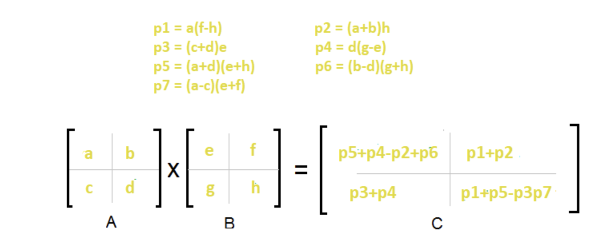
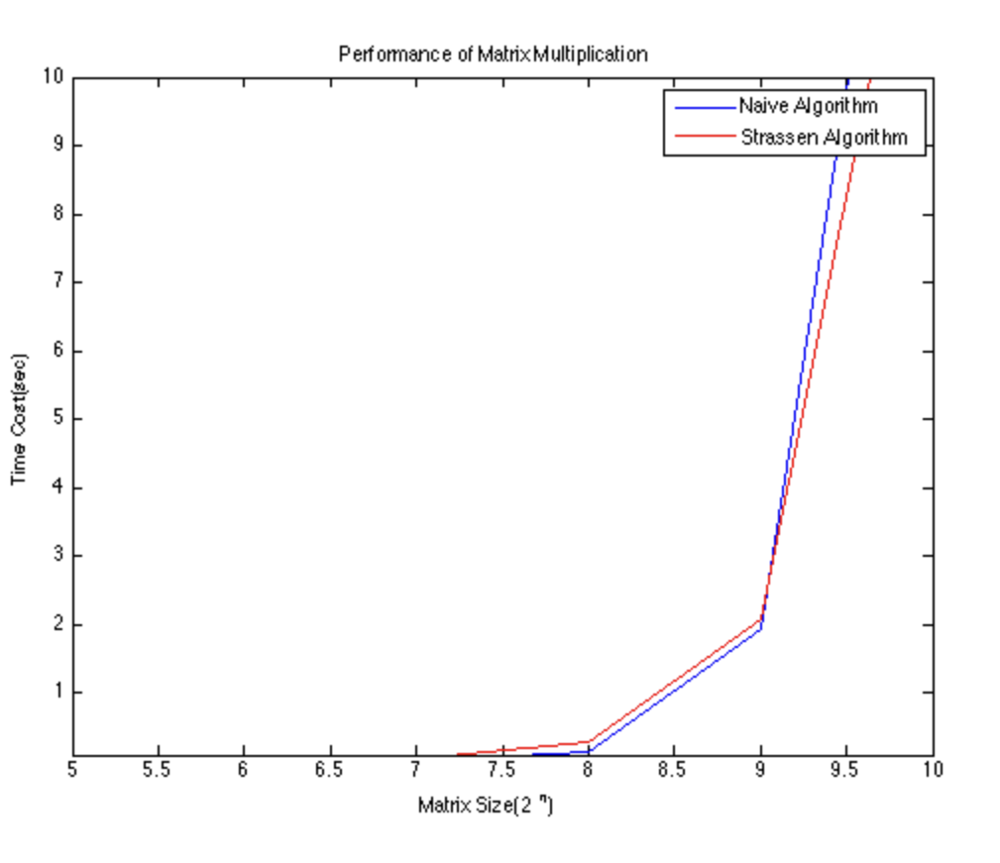

Strassen’s Matrix Multiplication algorithm
- In general, multiplying two `n*n` matrices takes `n^3` operations. But,Volker Strassen published his algorithm in 1969 proving that `O(n^3)` is not an optimal running time.
- Strassen's Algorithm uses Divide and Conuer strategy. The approach is to break the matrices into 8 submatrices and then recursively calculate the submatrices of the resultant matrix.
- Assume two matrices A and B
`A = ( ( class{cmjx-lg}{a} , b ), ( c , class{cmjx-lg}{d} ) )` and `B = ( ( class{cmjx-lg}{e} , f ), ( g , class{cmjx-lg}{h} ) )`
- In order to compute the product matrix of these two matrices using naive approach , 8 recursive calls will be made : `a * e, b * g, a * f,b * h ,c * e,d * g,c * f,d * h`
-
The results of above calls will be used to make the result matrix as follows:
`R = ( ( class{cmjx-lg}{ae+bg} , af+bh ), ( ce+dg , class{cmjx-lg}{cf +dh} ) )` - For the above approach `T(n)=8T(n/2)+O(n^2)`. Using master theorem, we will get a runtime of O(n^3).
-
Strassen showed, that computation of R can be done by 7 recursive calls instead of 8.
Following recursive calls will be made:
`h_1 = a * (f - h)`
`h_2=(a + b) * h`
`h_3=(c + d) * e`
`h_4=d * (g - e)`
`h_5=(a + d) * (e + h)`
`h_6=(b - d) * (g + h)`
`h_7=(a - c) * (e + f)` - The matrix R can be computed as
`R = ( ( class{cmjx-lg}{h_5+h_4-h_2+h_6} , h_1+h_2 ), ( h_3+h_4 , class{cmjx-lg}{h_1+h_5-h_3-h_7 } ) )` - For the above approach `T(n)=7*T(n/2)+O(n^2)`. Using master theorem, we will get a runtime of `O(n^(log7))` or `O(n^(2.8074))`.
- `O(n^(2.8074))` is better than `O(n^(3))` obtained from naive approach.
-
Summarizing the steps
- Divide matrices A and B in 4 sub-matrices of size N/2 x N/2 .
- Calculate the 7 matrix multiplications recursively.
- Compute the submatricies of C.
- Combine these submatricies into our new matrix C
Strassen's Approach

